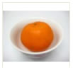
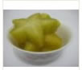
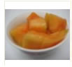
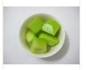
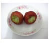
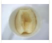
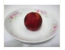
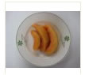

衛教中心
www.vghtc.gov.tw
首頁
認識食物
健康知識
配餐
飲食日誌
維護食物
維護個人資料
修改會員資料
登出
大明，您好
!
登出
飲食日誌
全榖根莖類
豆魚肉蛋類
蔬菜類
水果類
油脂類(堅果)
奶類
其它
您現在選擇是水果類

橘子一份
熱量：200Kcal
脂肪：0.2 mg
蛋白質：5mg

楊桃
熱量：120Kcal
脂肪：0.2 mg
蛋白質：10mg
選取
選取

芒果
熱量：100Kcal
脂肪：0.2 mg
蛋白質：5mg

香瓜一份
熱量：230Kcal
脂肪：0.2 mg
蛋白質：5mg
選取
選取

蓮霧一份
熱量：160Kcal
脂肪：0.2 mg
蛋白質：5mg

水梨一份
熱量：150Kcal
脂肪：0 mg
蛋白質：5mg
選取
選取

李子一份
熱量：200Kcal
脂肪：0.2 mg
蛋白質：5mg

哈密瓜一份
熱量：120Kcal
脂肪：0.2 mg
蛋白質：10mg
選取
選取
第 1 - 8 筆，共 16 筆
下一頁
1
2
確定